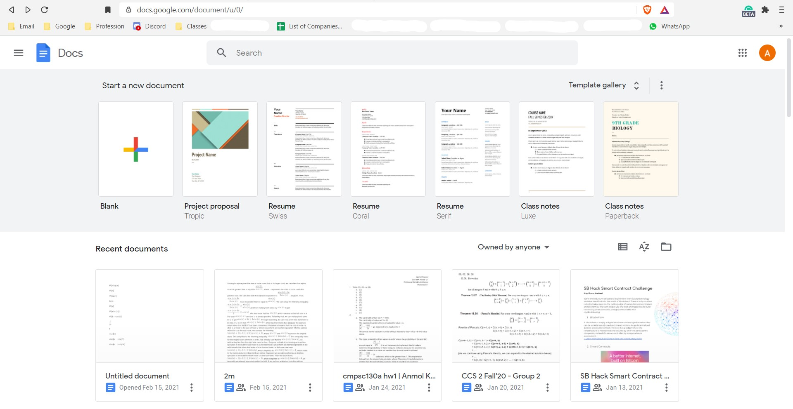
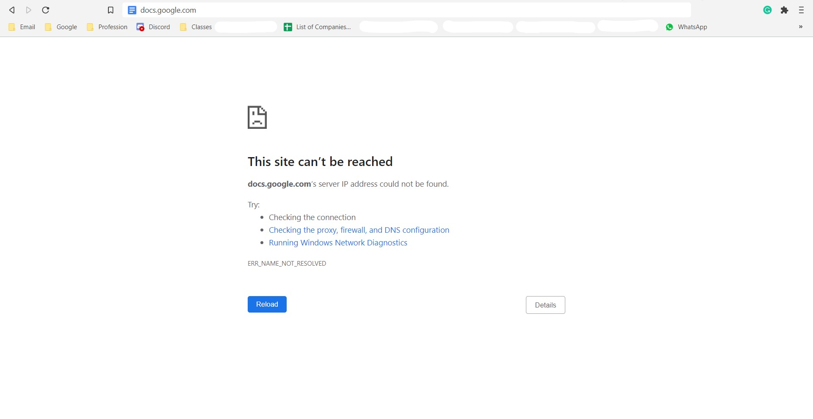

Problem Description
Why do Google Suite products matter?
When I was a high school student, I commonly helped out my friends when they struggled in the mathematics courses, especially AP Statistics and AP Calculus (both AB and BC), and not to mention the mathematics sections on the SAT (as you can tell, I was pretty much the go-to math geek when it came to asking for help). Working in-person with my friends to go over their troubles in their math class, I often worked out practice problems on a scratch sheet of paper, and for additional resources, I shared with them a Google Slides presentation that they could walk through to recall certain tips and tricks. Using Google Suite products really helped me out in these cases as they allowed me edit these presentations whenever I wanted to and wherever I was. The benefit of working on the cloud is far greater than depending on perfect health, especially when it comes to learning remotely during the era of COVID-19.
Apart from these purposes, I commonly used Google Suite tools such as Google Slides and Google Docs to communicate with my group members during a group project. We would list all of our ideas (scripts when it came to filming, tables when it came to documenting what each person does, etc.) and meet up to complete our project based on the guide we listed in the documents.
However, there was a detriment to using Google Suite tools:
Google Suite is Blocked on the School Network.
Expected output when navigating to Google Docs
Unwanted output when navigating to Google Docs
As a result of these blocked websites, we commonly had to use Google Suite tools on our phones when we needed to use it for sharing documents and other information we otherwise did not have access to under the school's network.
Substitute Goods
What are substitute Goods?
School administrators cited their number one reason for blocking Google Suite products was because they wanted us to use Microsoft's products instead. With a school-wide license, everyone has access to Microsoft Office 365, . . . but working with them is not as user-friendly as Google Suite's tools. Being completely free and 100% on the web, knowing how to use Google products was practically required knowledge when it came to working on group projects.
This ties in with the economics of substitute goods. According to their websites, Microsoft Office 365 for Education is $3.25 per person (max) per month school wide, whereas getting the Google Suite for Education plan with the same number of features costs about $4 per per person per month. Looking at the data, and knowing that the high school has to provide approximately 16000 accounts. With Google's plan, my high school would have had to pay just under $800,000, however, if my high school continues to stick with Microsoft Office 365, the administration would have to pay approximately $600,000. The supply curves are shown below in the interactable graph.
If the graph loaded properly, you should see two lines: one red and one blue in the right pan and some text and equations in the left pan. You can interact with the graph by clicking and dragging the graph. Usse your page scroller (two fingers on the trackpad or the scroller on your mouse) or the buttons in the top right to zoom the graph in or out. To see the equations that developed the graph, you may scroll through the pan on the left.
Economical Analysis
It is clear from the supply curves for the Google Suite for Education and Microsoft's Office 365 for Education that the optimal product to use is Microsoft's Office 365 for Education. The functions for these were adapted from the websites for each of the products, which are included below.
Analyzing this in terms of economics, we know from experience using both Google Suite tools and Microsoft Office tools that they are substitute goods to each other. As a result, we can state that as the price of one object increases, the other would be preferred, and so its demand increases. So if the price of the Microsoft's Office 365 for Education plan increases, then my high school would prefer to change their Office Suite tool to Google's product. Considering that the demand is currently higher for Microsoft's Office 365 tool, for Microsoft to maintain that high demand is to maintain the price of its product such that it will be less than Google's product. Microsoft may raise the service's price per student per month according to the substitution effect of a price rise such that the price remains lower than that of its competitor good.
Revisiting the Original Question
So, why did the school administration block Google Suite from being used under their network, despite its utility? Clearly, the school administration could have simply left it alone, letting the students use whatever product they want to use. However, taking into consideration that the administration spends about $600,000 (maybe considerably more because of hidden costs), it makes sense that if people do not use the product, this price paid for this product becomes a sunk cost (service not being used). This sunk cost implies that the school administration "loses" money for whenever a student chooses to not make use of their Microsoft Office license. As such, to answer the posed question, to reduce the sunk costs from little use of an expensive product (Microsoft Office 365 for Education), Google Suite was blocked to direct more students to using the Microsoft Office 365 tools.
Glossary
- Microsoft Office 365: A set of professional tools for document editing and presentation
- Google Suite: A set of professional tools for document editing and presentation as a susbtitute for Microsoft Office
- Substitute Goods: A pair of goods considered alternatives to each other
- Sunk Costs: The costs that cannot be recovered after its use
Sources
- Microsoft Office 365: https://www.microsoft.com/
- Google Suite: https://edu.google.com/